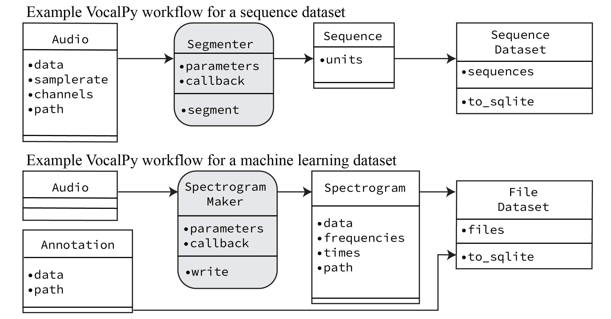

This post falls in the category of “me writing about how my thinking has evolved about research and software”. If you are a researcher that writes software, then you might get something out of it. Especially if you’re not familiar with the idea of domain-driven design. What I hope to convince you of is that, sure, domain-driven design is just as obvious an idea as it sounds, but you should still be thinking about it. I’ll get there by saying a little about one book I’ve been reading recently, Structure and Interpretation of Computer Programs.
But first, let me introduce domain-driven design, and tell you why you might care about it. Sometime in 2022-2023, I read Domain-Driven Design by Eric Evans, and I got really excited about it. (You can get it from bookshop.org here, and if you’re feeling dangerous you can probably find a PDF of it on a random GitHub repository.) I ended up reading it because I had been reading Architecture Patterns with Python, and they mentioned it in the introduction. Full disclosure: I have not finished either of these books. In fact, I haven’t finished a lot of books, but that’s maybe the undiagnosed ADHD talking. I did spend a lot of time with the first few chapters of both, though. If you do nothing else, read the first chapter of Evans’ book, where he relates the story of how he worked with some electrical engineers to design software they would use to design printed circuit boards (AKA PCBs). If you have ever gone through the process of designing software for some real-world domain, I bet it will really resonate with you. Or, you know what? I’ll dare to say that, even if you have only ever written nerdy software tools for the domain of other software nerds, you still might find that the story resonates with you. It’s an interesting story for a couple of reasons. First of all, you have a feeling that he is almost an anthropologist, going into this unfamiliar tribe of electrical engineers so he can learn their culture. I think this is a familiar feeling for anyone who has tried to translate some real-world domain into software, even if it’s part of a culture they feel like they belong to. Second, you really get a feel for his process. At the beginning, he makes mistakes. He tries to understand their jargon word-for-word. Then he asks them to specify in detail what they think the software should do. Neither of those approaches were ever going to work well. Finally he hits upon the idea of asking them to draw out diagrams of their process and how the software should interact with it. These are simple, rough box and arrow sketches as he shows.

I happened to read this at the same time that I had been sketching out some initial ideas for the VocalPy library that I develop. You can see some of these sketches here: https://github.com/vocalpy/vocalpy/issues/19

If you were to click through to the library‚Äôs docs, you might notice that these bear little resemblance to VocalPy now. I think this is actually a good thing ‚Äì more on that below. (You might also notice at the time I was thinking of calling it vocles ü§¶ ‚Äì this is a very tortured pun, everyone please clap for me showing enough restraint for once in my life to not deploy a tortured pun.)
I don’t actually remember which came first: these sketches, or me reading the book. I think that I actually drew the sketches first, and had them sitting around on a desk forever, until finally it hit me that I should add them to the repo to document my design process. And then reading this part of Evans’ book really made me think that drawings like this should be integral to the design process. Part of what I want to say here is that, you should be doing this, if you’re not already, and what’s more, you should be including it in your docs for your software. And this goes for all software, unless you are literally writing such a boring cookiecutter CRUD app that a so-called Large Language Model can regurgitate it perfectly for you after being “trained” on the actual work of human beings.
At this point, you might be thinking, “write code in terms of your domain, yeah, sure, everybody does that”. Like I said, I got really excited reading this stuff and told people about it at the job I had at the time. I made a big deal of presenting parts of the book, and talking about how we could use this approach for what we were working on. And I got this very underwhelmed response of “Yeah, we sort of already do that. Aren’t you just describing object-oriented programming?” Yes, but no! I’ll come back to the “no, we aren’t doing that below”, but first, the yes. We should realize this is what we’re already doing and be very explicit about it! The domain should be at the front of our mind at all times, and we only should be iterating on the design of our software insofar as it relates to the domain!
Here I’ll say what I said in that work meeting when I got that underwhelmed response. Even though we all sort of subconsciously think of the domain when we design our code, Evans advocates for a specific development process, that he says is required for his approach to design to work. The important part here is that he sees his process as a form of extreme or Agile programming. If you don’t know what those are, what you need to know is that they are more iterative then previous approaches based on “elaborate development methodologies that burden projects with useless, static documents and obsessive upfront planning and design”, as he puts it. Instead, Evans focuses on writing code that has a bare bones implementation he can test right away. “Development is iterative.” Of course, this is one place where Python, my main programming language, shines. It’s really easy to iterate interactively in a Jupyter notebook with a bare-bones implementation of your sketch of an API. Of course, later you should do some proper engineering instead of living in Jupyter notebooks, so you don’t have to worry about someone giving a preachy lecture in the form of a conference talk that condemns you for your naughty programming practices. His other requirement for the development process is that “[d]evelopers and domain experts have a close relationship.” If you are a researcher who programs, well, hopefully you already have a close relationship with yourself. And with your collaborators and colleagues. This second requirement naturally gives rise to one of the key ideas from the book, that of ubiquitous language, that “embeds domain terminology in the software systems we build”, as Martin Fowler puts it in this post. The ubiquitous language consists of the key concepts in the domain that the software needs to capture, the things that developers and domain-experts realize they should focus on as they go throug the iterative process of development.
In spite of the underwhelmed response, I continued to really like the idea of domain-driven development. Even if I haven’t gone back to finish the book and immerse myself in every detail, the core idea has really stuck with me. So much so that you can see that I cited the book in a Proceedings paper where I first introduced VocalPy, and where I included similar schematics.

As I mentioned above, even by the time I got to this first Proceeding paper, the design of the library had evolved. But this is a good thing – I did exactly what Evans prescribed, and continued to iterate on the design of the package. Doing so made me realized which parts were actually useful, that I wanted to retain in the core. I think sketching things out has also helped me understand why the things I ended up taking out are still useful, just not in the way I had thought at first. The library at first was very focused on the idea of capturing a dataset of specific file types, and then being able to save this dataset in the form of a SQLite file. You can see where I was really focused on treating the dataset as if it were part of an app, like in the architecture book. I do think this is still important, but it is not the core of what the library does – I realized later that the core data types needed to be things like sounds, spectrograms, annotations, the things that a researcher studying animal communication and using bioacoustics would be talking about. So, basically, I did the anthropological exercise, as in Chapter 1 of Evans’ book, but instead of doing it with other people, I started by doing it with the part of my brain that claims to know things about acoustic communication. (I have since engaged with other people who actually know these things and can give me good feedback.)
I also came back to the idea of domain-driven development in a talk I gave about VocalPy where I talked a little bit about how it maybe clashes with some recommendations for programming in scientific Python.
This is where I come back to the “no” part of “Do we already do this? Yes and no.” In the discussion at the end of the talk, I said just what I’ve said here, that a lot of people react as if, “so, yeah, we already do that”. If that’s so, then show me the doodles! Show me your mental model of your domain — put it in your docs! Let me read it, let me actually see these schematics, even if they are just doodles, it helps me to know how your thought process evolved. All I can see right now is this insurmountable mountain of code, and I don’t even know where the path starts so I can scale it! I know that there are examples of people doing this, e.g., in the scientific Python community, but I think it’s fair to say that this is not the norm. I don’t know that I have ever seen diagrams showing how the design evolved, but I can’t help but feel like that’s exactly the sort of thing that could help people get up to speed on how the code works.
Ok, so now the moral of the story at the end. This is where I tell you that, actually, you are quite justified if you are feeling like domain-driven design is old news, but even then you should still be thinking about it. I now know for sure that these ideas have been around longer than Eric Evans’ book, because I have been attempting to read yet another book, the aforementioned Structure and Interpretation of Computer Programs (namely the Javascript edition, if you care). I ended up reading this book because I have begun working my way through the reading list on <teachyourselfcs.com>. That is another topic that could be a blog post unto itself, but suffice to say that it is a source of some shame that I ostensibly make my living by programming computers,
but I only have the vaguest idea of how computers work, or how programming works, and so I have this need to fix that. I have also realized that, of course, computer scientists also think in terms of models of computers, that is, their domain, and this is why it’s easier to learn about computers by learning their models. This is why it’s helpful to learn git by actually learning how git works, and this is why I think it has actually been worth reading SICP, because it gives me two or three different mental models of how computer programs work.
And so this is how I ended up finding domain-driven design in SICP, and having to admit to myself that, yeah, this idea has been around forever. Lo and behold, when I got to chapters 2 and 3, there I saw that we were talking about data abstraction and designing programs for modeling. Sound familiar? Let me quote you this bit from chapter 3:
One powerful design strategy, which is particularly appropriate to the construction of programs for modeling physical systems, is to base the structure of our programs on the structure of the system being modeled. For each object in the system, we construct a corresponding computational object. For each system action, we define a symbolic operation in our computational model. Our hope in using this strategy is that extending the model to accommodate new objects or new actions will require no strategic changes to the program, only the addition of the new symbolic analogs of those objects or actions. If we have been successful in our system organization, then to add a new feature or debug an old one we will have to work on only a localized part of the system.
Well there it is, domain-driven design in a nutshell. And if so great and venerable a source as SICP deigns to talk about it, if these supposedly very smart people think it’s worth discussing in the introductory sections of their book chapters, then it must be an idea worth thinking about. QED.